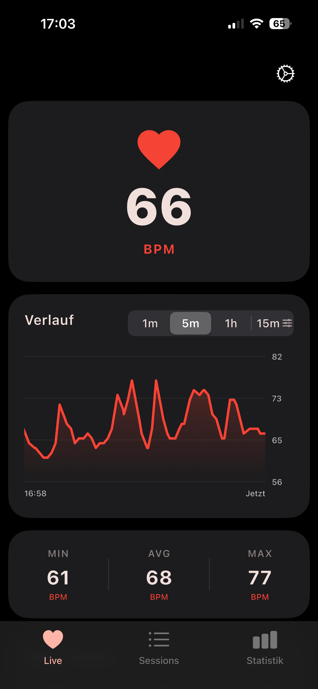
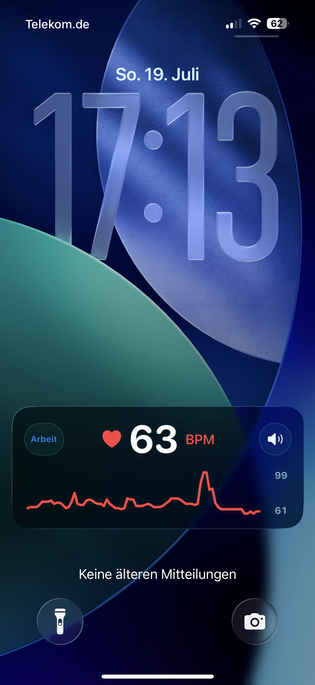
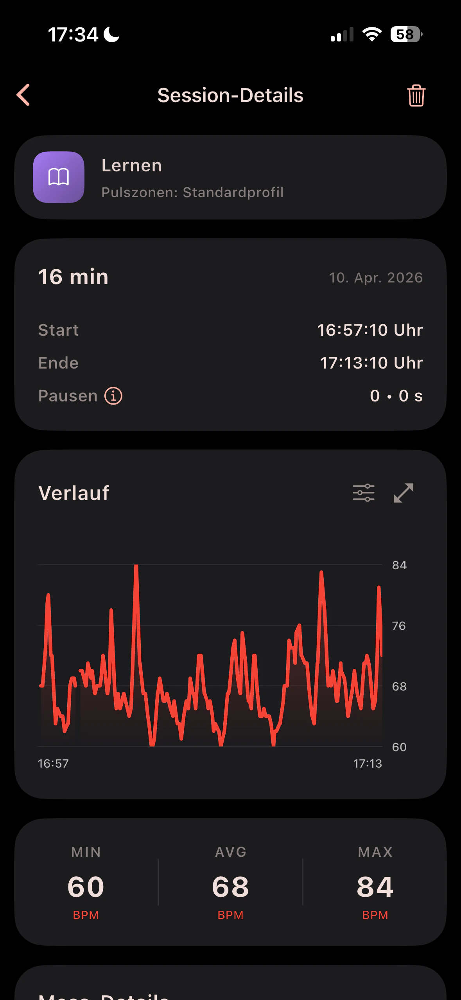
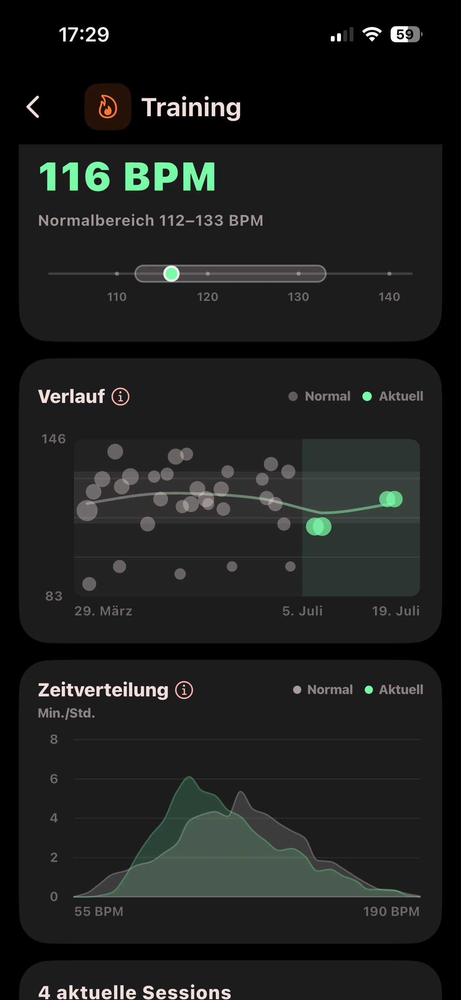

Nicht in Apple Fitness
Die AirPulse-Session bleibt in AirPulse und wird nicht als Workout in Apple Fitness gespeichert. Deine Ringe in Apple Fitness bleiben komplett unberührt
Richte einmal eine persönliche Automation in Apple Kurzbefehle ein. Danach startet AirPulse die Pulsaufzeichnung jederzeit automatisch, sobald du deine AirPods Pro 3 einsetzt, auch bei gesperrtem iPhone

Was AirPulse bewusst nicht speichert
Die AirPulse-Session bleibt in AirPulse und wird nicht als Workout in Apple Fitness gespeichert. Deine Ringe in Apple Fitness bleiben komplett unberührt
AirPulse liest, berechnet, zeigt und speichert keine Kalorienwerte. Das gilt auch für Apple Health
Der Kurzbefehl startet die Aufzeichnung. Während der Session zeigt AirPulse den aktuellen Puls, danach speichert die App den Verlauf. Mit Pro kommen persönliche Berichte für Session-Tags hinzu.
01 · Auslöser
Nach der einmaligen Einrichtung in Apple Kurzbefehle löst die Verbindung deiner AirPods Pro 3 die Pulsaufzeichnung direkt aus. Dein iPhone kann dabei gesperrt bleiben.
Kurzbefehle einrichtenAutomatischer Ablauf
02 · Live
Aktuelle BPM und der Verlauf erscheinen in der Live Activity auf dem Sperrbildschirm. In der Dynamic Island siehst du, dass die Session läuft. Die App muss dafür nicht geöffnet sein.

03 · Verlauf
AirPulse speichert den Verlauf als Session mit Dauer, Pausen, Kurve, Min-, Durchschnitts- und Maximalwerten. Tags geben der Aufzeichnung den passenden Kontext.
Mehr über Tags
04 · Tag-Berichte
Mit Pro vergleichen Tag-Berichte aktuelle Sessions mit deinem persönlichen Normalbereich. Für jeden Session-Tag siehst du den Verlauf und die Zeitverteilung.

Diese Funktionen ergänzen den automatischen Start und lassen sich je nach Session oder Tag aktivieren.
In der Live Activity kannst du den Session-Tag wechseln und das Audio-Feedback stummschalten, ohne die App zu öffnen.
AirPulse Pro kann Zonenwechsel und persönliche Limits über deine Kopfhörer ansagen. Du kannst Profile Tags zuordnen und eigene Audiodateien hinzufügen.
Mit Pro kannst du den Standortverlauf für einzelne Session-Tags aktivieren. Gespeicherte Routen zeigen Karte, Strecke, Geschwindigkeit und Splits.
Die Session-Datenbank wird lokal geführt. Wenn iCloud verfügbar ist, kann AirPulse sie darüber sichern und wiederherstellen; ausgewählte Einstellungen können über Apple-Dienste synchronisiert werden.
Die Session-Datenbank liegt lokal auf deinem Gerät. AirPulse betreibt keinen eigenen Upload-Server. Wenn iCloud für deinen Apple-Account verfügbar ist, kann die App dort eine Backup-Kopie speichern und ausgewählte Einstellungen synchronisieren.